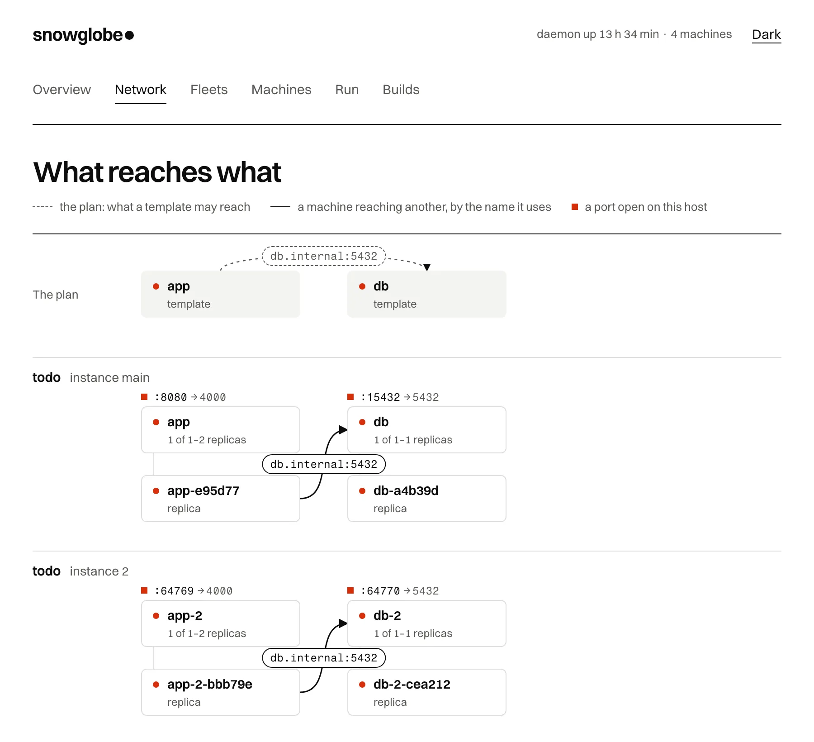

Orchestration and fleets
Read this when one machine is not enough. snowglobe daemon runs many machines
from one site, without KVM, root or Docker. It forks them in milliseconds, keeps snapshots of running
ones, puts services behind ports that scale to zero, holds them all to a memory budget, and applies whole
fleets from a file.
The words this page uses:
| Word | What it is |
|---|---|
| template | a site restored once, for machines to fork from |
| machine | forked from a template in tens of milliseconds; shares the template's memory and keeps what it writes |
| snapshot | a running machine saved whole, to start machines and templates from |
| service | a template's machines behind host ports, started on demand and scaled to zero |
| link | a name one machine reaches another by; nothing else joins them |
| fleet | a snowglobe.toml naming all of the above, applied in one go |
| fleet instance | one copy of a fleet's services, machines and links, like docker compose -p |
Templates and machines: the daemon
Start the daemon, add a template, then fork machines from it with snowglobe up:
snowglobe daemon --detach # in the background, its log in daemon.log beside the socket snowglobe template add dist/api --name api # the python example built with --network fetch snowglobe up api --name web -p 8080:8000 --label app=web snowglobe up api --name worker # another machine, its own state snowglobe sh web 'python3 -m http.server 8000 &' snowglobe ps snowglobe stop worker snowglobe template rm api # and its machines
- A machine shares the template's memory, lasts until it is stopped, and keeps what it writes.
- The daemon forwards a machine's ports. Its site needs a network for that.
sh,cp,exec,attach,psandstopreach the daemon's machines as they reach instances.
Nothing the daemon starts outlives it:
- Stopped (ctrl-c, SIGTERM,
snowglobe daemon stop), it stops its template servers, machines and builds. A second ctrl-c skips the grace. - Killed outright, they stop themselves: each holds a lifeline to it.
- Started again, it restores its templates from their sites and starts its services' replicas. Machines are not brought back.
Snapshots of running machines
Set a machine up once (dependencies installed, a server started, data loaded), then fork as many as you want, already set up.
snowglobe snapshot save saves a machine whole: its memory, its running processes and the
files it wrote. Start machines from it with up --snapshot, or make it a template of its own
with template add --snapshot.
snowglobe up api --name base snowglobe sh base 'pip install httpx && python3 -m http.server 8000 &' snowglobe snapshot save base --name ready # tens of milliseconds snowglobe template add --snapshot ready --name api-ready snowglobe up api-ready -p 8000 # installed, its server already listening snowglobe snapshot ls snowglobe snapshot rm ready
Services and scale to zero
A service puts a template's machines behind host ports that the daemon holds. Each connection (or
snowglobe sh <service>) goes to one of its replicas, started on demand.
snowglobe service add web --template api-ready -p 8080:8000 --min 0 --max 3 --idle 5m --concurrency 10
snowglobe service add db --template pg --state keep --idle 10m
snowglobe service ls # replicas running now, of each
snowglobe service rm web
| Flag | What it does |
|---|---|
--min 0 | scale to zero: replicas with no connection or job for --idle stop, and the next request forks one again. Under --min, replicas that stop are replaced |
--max | the most replicas |
--concurrency | connections a replica takes before another is started, up to --max |
--idle | how long a replica may sit with no connection or job |
--state discard | the default: every replica starts from the template |
--state keep | saves the replica before it stops, and the next one carries on from that save (one replica) |
Made of a snapshot whose server was already listening, a service at zero answers its first request in about 20 ms.
Fleets: snowglobe apply
A snowglobe.toml says what the daemon should have, and snowglobe apply gets it
there. One file goes from source to running services. It can hold:
- templates: a built site, a URL, or a Dockerfile directory built first;
- snapshots: a machine of a template set up by commands, saved once a readiness command succeeds;
- templates of those snapshots;
- services and machines;
- links, a network mode, and each template's egress (below).
A small one:
[templates.py] build = "../python" # built first, for running natively network = "fetch" [snapshots.serving] template = "py" run = ["cd /srv && python3 -m http.server 8000 >/dev/null 2>&1 &"] ready = "wget -q -O /dev/null http://127.0.0.1:8000/" [templates.serving] snapshot = "serving" [services.web] template = "serving" ports = ["8080:8000"] min = 0 # scaled to zero, woken by a request idle = "5m" [machines.scratch] template = "py" ttl = "24h"
snowglobe diffsays what apply would do.snowglobe downremoves all of it.- An entry that changed is replaced, with what is made from it. One gone from the file is removed. Names something else uses are refused.
The daemon keeps a list of fleets, like compose projects. /v1/fleets adds a file from where
it is, or writes a new one in the daemon's own directory (checked before it is saved). It plans, applies
(all of it, or one step at a time by its key) and removes each by name.
Two examples ship with snowglobe:
examples/todo-fleet/: an Elixir app and Postgres, each a machine of its own, joined by a link. It is the fleet in the figure below.examples/fleet/: a Supabase machine that gets a row every second, and a node viewer that follows it over Supabase Realtime, joined by a link. It runs in a browser tab too.
Run one, see it, and give it to an agent:
snowglobe daemon --detach snowglobe apply -f examples/todo-fleet/snowglobe.toml curl localhost:8080/todos snowglobe ui # views: overview, network, fleets, machines, run, builds claude mcp add snowglobe -- snowglobe mcp --daemon # fleets, links and the graph, over MCP
Links: what reaches what
Nothing joins machines but a link. A link gives a machine a name to reach another by: its guest connects
to db.internal:5432 and gets the target's guest port.
- From: a machine, or every machine of a template, now and later.
- To: a machine, a service (one of its replicas, started if none runs), or a template's machines.
- While running: links change while machines run, and new connections follow them.



examples/todo-fleet in snowglobe ui: an Elixir app and Postgres, in two
instances. Instance 2's app reaches its own database as db.internal:5432, and nothing of main's.In a fleet file a link is a [links.NAME] entry (below). Over the
API:
curl --unix-socket "$SOCK" -X POST localhost/v1/links \
-d '{"from": "app", "to": "db", "port": 5432, "as": "db.internal"}'
curl --unix-socket "$SOCK" localhost/v1/graph # nodes and edges: forks, replicas, links, reaches, ports
Each machine gets a Unix socket of its own for each of its links, in its template's socket directory.
Only that template's machines and the daemon reach it. So the daemon knows which machine connects, and
no TCP port stays open on the host for anything else to use. A link is the host's own: it needs no
allow_private, and works when the machine's egress is none.
Fleet instances and the network
A fleet runs as instances, like docker compose -p. Start another and it gets an app and a
database of its own, beside the first.
- Templates and snapshots are shared: built and restored once.
- Services, machines and links are made per instance, labelled
snowglobe.instance. - Instance
mainkeeps the file's names. Another carries its own (db-2), and the system picks its host ports.
Start and remove instances from the UI, the API (POST /v1/fleets/NAME/instances,
DELETE /v1/fleets/NAME/instances/ID) or MCP (start_instance,
stop_instance).
The file's [network] mode says what may cross between instances, and each template's
egress says where its machines' own connections may go:
[network] mode = "exclusive" # each instance reaches only its own machines (the default) [templates.app] build = "app" egress = "internet" # none (the default), internet, or private [templates.db] build = "db" expose = [5432] # what the others reach under mode = "all" [links.app-db] from = "app" to = "db" # a service or machine of the file port = 5432 as = "db.internal"
| Network mode | What may cross |
|---|---|
exclusive | the default: a link stays inside its instance. Instance 2's app reaches instance 2's db and nothing of instance main's |
inclusive | every machine of the template reaches any machine of the target's template, across instances |
all | as inclusive, and every template also reaches every other one's exposed ports by its name |
| Egress | Where a machine's own connections may go |
|---|---|
none | the default: nowhere. Only links and forwarded ports work |
internet | public addresses |
private | the host's loopback and private networks too, as allow_private did |
The same file in a browser: /fleet/
The demo site's /fleet/ runs a fleet file in one tab, on the machines of the
agent page. Load or write the file, read the plan, then Run each step
or Run all. It is another place to run the file, not another format: the same snowglobe.toml
goes to snowglobe apply.
- The file is coloured as you type. A
runcommand can be a multi-line string (three single quotes, as written, or three double quotes, with escapes), which reads like a shell script. Heredoc terminators need column 0, since TOML keeps the indentation.runstays an array, even for one command, and a file kept on Windows should have LF line endings (the repo's.gitattributessets that for.toml;snowglobe applyalso reads CRLF as LF). - The graph above the steps draws the machines the file uses, and an arrow for each link labelled with the name and port the guest uses. A dashed box is asleep, a red one is busy.
- Stop ends what runs, closes the frame, clears the links and sends every machine the file uses back to its image, so each step is pending again. What the machines did is forgotten.
- How many machines are awake at once is raised to the number the file uses (up to 8) when you run it, since a viewer linked to two sources needs all three awake. Stop puts it back to 2.
- The Templates menu next to
Load the example
holds small fleets to try, which areexamples/fleet/templates/in the repo. - Steps. A snapshot's
runcommands andreadycheck, each link, each machine woken, each service opened in a frame. - Templates name a site the page has:
build = "../python"is thepythonmachine. One site is one machine on the page, so templates of one site share its files and processes. - Links are real. A guest on port 80 or 443 makes HTTP(S) requests. Any other port
(
as_port, defaultport) is a raw TCP stream, which carries Postgres, Redis and WebSocket traffic alike. A guest'sws://name/on 80 or 443, and a page in the frame, can open WebSockets too. A machine reads its links when it wakes. - Read, not applied:
min,max,idle,concurrency,ttl,egress,network.modeand host ports. The page lists them.
In a browser: snowglobe ui
snowglobe ui shows the daemon in your browser, one view at a time:
snowglobe ui # opens http://127.0.0.1:7777/?token=… snowglobe ui --start-daemon # starts a detached daemon first if none runs
- Overview: the last hour on one time axis (memory against the budget, templates running, jobs and their latency, what happened), and a lane per template with each machine's life as a bar.
- Network: what reaches what. The templates and the links between them come first, dotted: the plan. Under them is a group per fleet instance, its machines in their template's column. Solid edges show where a machine really reaches another, labelled with the name it uses, and a tag on each shows the host port it opens. Drag from a machine or template onto another to link them.
- Fleets: each fleet file, its instances, and its plan as steps that each have their own Apply. Write a new one or add one you have.
- Machines: one control per task (add a template, up a machine, add a service, link), and the templates, machines, services, ports and snapshots.
- Run a command on a fresh fork, and Builds from a directory, an image or a Dockerfile.
Whatever you select shows its figures and actions, its terminal one click away. Everything the UI does goes through the daemon's API, which the CLI and the MCP server use too.
It listens on 127.0.0.1 only. The link it prints carries a session token that becomes a cookie, and every request needs it, so other pages you visit can't reach the daemon through it.
The terminal is ghostty-web, Ghostty's terminal compiled to WebAssembly, joined to the machine's console over a WebSocket. The page is Preact and htm (about 7 KB gzipped), served gzipped from inside the binary, with no build step.
Fire and forget: submit and runs
snowglobe submit runs a command once on a fresh fork of a template and returns at once with
the run's id. The fork is thrown away when the command ends. Its output and exit status are kept for
snowglobe runs. --wait waits for the end and exits with the command's
status.
id=$(snowglobe submit py 'python3 report.py' --env DAY=monday --timeout 600) snowglobe runs # every run, newest first snowglobe runs $id --wait # its output; exits with its status
Ports
snowglobe portslists every host port the daemon holds and where it leads: the machine or service, the guest port, and whether it is open now (a service's stays open at zero).snowglobe ports checksays whether a host port is free, or which machine, service or other program holds it. It exits 1 when the port is taken.
The UI shows the same, and checks the ports you type as you type them.
snowglobe ports HOST GUEST KIND NAME TEMPLATE STATE 127.0.0.1:18081 8000 machine web curl open 127.0.0.1:18090 8000 service api curl at zero snowglobe ports check 8080 # 127.0.0.1:8080 is free
Limits and lifecycle
snowglobe daemon --memory 8G --wait 30s & snowglobe template add dist/python --name py --idle 30m snowglobe up py --ttl 1h
| Flag | What it does |
|---|---|
daemon --memory 8G | caps what its template servers and machines take together. No cap unless asked |
daemon --wait 30s | how long a machine that doesn't fit waits for room before it is refused, with the reason |
up --ttl 1h | stops a machine after that long, whatever it is doing |
template add --idle 30m | stops a template's server after that long without a machine; the next up (or job) restores it first, in about a second |
How memory is counted: Linux measures each process's proportional share. macOS measures its resident memory, which counts pages shared with the template in full, so the cap is reached sooner.
Events and top
snowglobe topshows the daemon live: memory against its budget, templates (awake or asleep), services with their replicas and open connections, machines with what each takes and when it stops, and the latest events.snowglobe eventsstreams those events, the last 200 first: machines up and stopped, replicas started and stopped, templates asleep and awake, snapshots, admissions refused.--jsonis for programs.
snowglobe top snowglobe events --json | jq 'select(.kind == "admission.refused")'
The daemon's API
The API is HTTP/JSON on a Unix socket in the user cache (curl --unix-socket works). The CLI,
the UI and the MCP server all use it.
- Over TCP:
--listen ADDR --token-file Falso serves it over TCP, to requests bearing the token.SNOWGLOBE_DAEMON=http://HOST:PORTwithSNOWGLOBE_DAEMON_TOKENpoints the CLI at it. - Builds:
POST /v1/buildstakes a directory with a Dockerfile (by its full path), an image reference, or a Dockerfile's text. It runssnowglobe build(Docker when it's there; an image builds natively without it) and makes the result a template./v1/builds/{id}/logstreams its output (?follow=1). - Terminals: a machine's terminal is a WebSocket at
/v1/machines/{name}/attach?rows=R&cols=C. - Metrics:
/v1/metricskeeps a sample every 5 s for the last hour (memory, machines, replicas, jobs and their latency)./metricsserves the same in Prometheus's format.
| Path | What it serves |
|---|---|
/v1/templates, /v1/machines | templates and machines |
/v1/machines/{name}/jobs | a job on a machine |
/v1/templates/{name}/jobs | a job on a fresh fork |
POST /v1/runs, GET /v1/runs/{id} | fire-and-forget runs |
/v1/services, /v1/services/{name}/jobs | services, and a job on a replica |
/v1/links, /v1/graph | links, and the graph of what reaches what |
/v1/fleets | fleets and their instances |
/v1/ports, /v1/ports/check?port=N&ip=IP | host ports |
/v1/events | events, as server-sent events (?after=SEQ to resume) |
/v1/stats | counts of templates, machines, services and snapshots, and memory used against the budget |
Every endpoint and its body is in llms.txt.